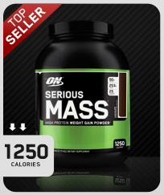
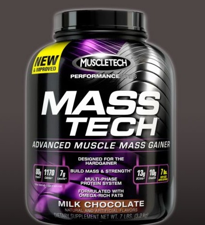
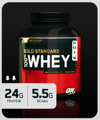
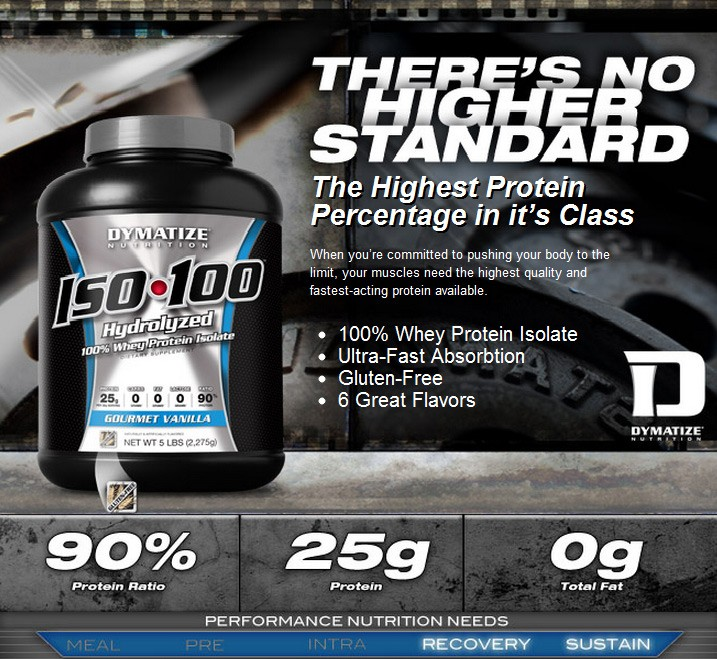
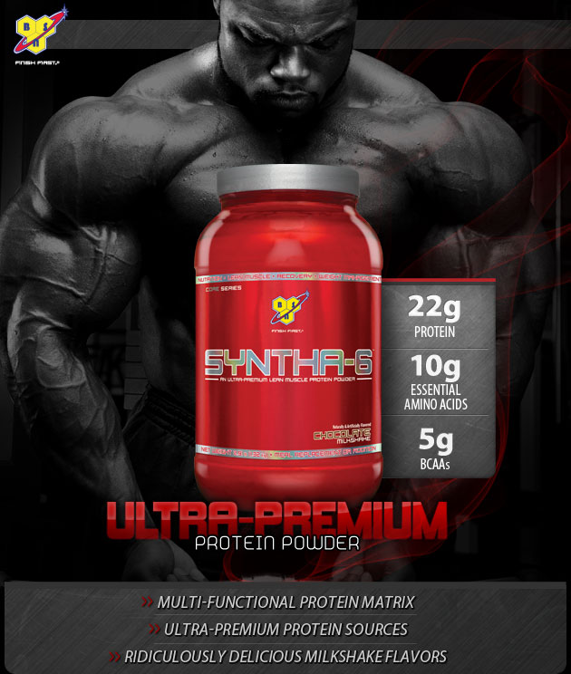
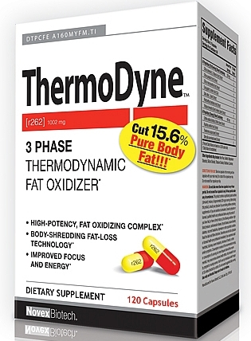
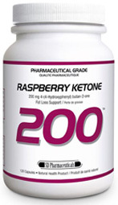
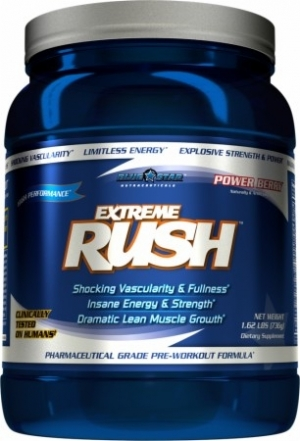

A dietary supplement is intended to provide nutrients that may otherwise not be consumed in sufficient quantities.
If your body is an ectomorph you should concentrate on gaining weight in the form of good, lean muscle tissue. Weight training should be fairly heavy and done at a slower workout pace with longer rest periods between sets. Don't weight train too often or for too long per training session. Eat a diet high in quality foods, eat more than you're used to, and eat often. Keep aerobic activities to a minimum, your body is burning calories with a large rate like in the normal day without doing any effort 2000 calories so you need a supplement to have lots of calories, protein and that is weight gainer
| Best weight gainers | Serious mass | Pro-complex gainer | Mass-tech |
|---|---|---|---|
| images |  |  |
 |
| reviews | ratings on bodybuilding.com | ratings on bodybuilding.com | ratings on bodybuilding.com |
If your body is mesomorph you have a naturally fit body but, to maintain or improve it, you should adopt an exercise and diet regimen that compliments your build. You can strength train more often and for longer periods of time, but be careful not to overdo it. Train with moderate to heavy weighs and keep a moderate pace, making sure not to rest too long between sets. You'll find you gain muscle quite easily. Don't fear; you won't get "bulky." When you're happy with your muscle size, simply train to maintain. Stick to a good, healthy diet to stay lean and muscular, and watch for any slow-creeping fat gains. Engage in and enjoy aerobic activities, but be careful not to overdo it, and you gains fat easier than ectomorph in order to build musle you have to get good source of protein and the best source is whey protein
| Best whey protein | Optimum Gold Standard 100% Whey | DYMATIZE ISO-100 | BSN SYNTHA-6 |
|---|---|---|---|
| images |  |  |  |
| reviews | ratings on bodybuilding.com | ratings on bodybuilding.com | ratings on bodybuilding.com |
If your body is endomorph your biggest concern should be losing fat and adopting a lifestyle that keeps it off. Strength training should be done to get a better muscle-to-fat ratio, which will help to boost your metabolism. Use moderate weights at a fast training pace, allowing for very little rest between sets and exercises. Lower your calorie intake and eat frequent but small meals to make sure you're still getting adequate nutrition. Eliminate sugar, sweets, and junk food from your diet. Get your heart pumping by engaging in some form of daily activity such as brisk walking or biking and you need fat burner as a supplement
| Best fat burner | Novex Biotech ThermoDyne | RASPBERRY KETONE 200 | Blue Star Nutraceuticals CARNITINE LCLT |
|---|---|---|---|
| images |  |  |  |
| reviews | ratings on bodybuilding.com | ratings on bodybuilding.com | ratings on bodybuilding.com |